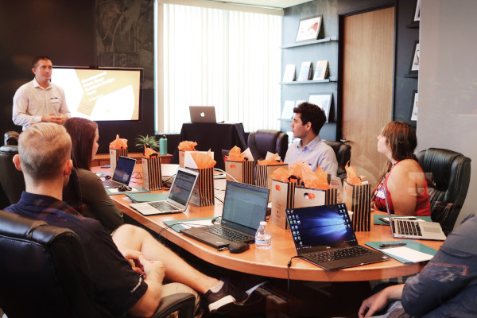

Casos de uso
O valor encontra a razoabilidade sem compromisso
Indústria de Serviços
Oferecendo vários serviços para vários clientes? Acompanhe tudo e fique em contato com todos em uma grande plataforma
Com CatchUp você pode:planejar
gerenciar
colaborar
todos os seus projetos com suas equipes e clientes de qualquer dispositivo e local.
Todos permanecem na mesma página!
Sem mais lacunas, sem mais falhas de comunicação... Nunca!
Essa plataforma poderosa e fácil de usar ajuda a manter tudo organizado, para que você possa se concentrar no trabalho real!
Empresas de TI
Vença a concorrência criando estratégias e gerenciando seus projetos e equipes enquanto entrega qualidade aos seus clientes por meio desta solução colaborativa!
Poderoso, acessível, fácil de usar e seguro - o CatchUp ajuda você a:Gerenciamento de projetos e agendamento de tarefas
Colaboração e comunicação em tempo real
Tarefa específica de negócios e estrutura de item de ação
Progresso e acompanhamento de projetos e tarefas
Faturamento integrado e registro de horas
Acessível a partir de todos os seus dispositivos, o CatchUp atende a todas as organizações que trabalham em qualquer ambiente - híbrido/remoto/co-localização, elevando a produtividade e eficiência para o próximo nível!

Agências Digitais
Projetos complexos, indústrias variadas, múltiplos clientes?
CatchUp para o seu resgate!
O CatchUp orienta sua organização para fora do caos desorganizado e para uma solução clara, simples e fácil de usar, mas poderosa e eficaz, que acelera a produtividade a um preço acessível.
Gerenciar vários projetos e equipes
Trabalhe com vários clientes
Colaborar para trabalhar em direção aos objetivos comuns
Rastreie projetos, faturamento e registro de horas

Empresas de Marketing
Necessidades em constante mudança e evolução do mercado ou cliente exigente?
Sem problemas! Uma solução, do seu jeito!
A CatchUp fornece uma solução robusta e eficiente para todas as suas necessidades complexas de gerenciamento de projetos, para que você possa se concentrar no que faz de melhor - Marketing!
Plan & manage your projects, campaigns & teams
Collaborate to bring out & deliver the best ideas
Keep track of campaigns
all your projects with your teams as well as your clients from any device and any location.
Todos permanecem na mesma página!
Sem mais lacunas, sem mais falhas de comunicação... Nunca!
Essa plataforma poderosa e fácil de usar ajuda a manter tudo organizado, para que você possa se concentrar no trabalho real!
- 
escritórios de advocacia
Casos complicados, cronogramas variados, vários arquivos de casos, vários clientes organizam tudo para que você possa se concentrar em seus casos!
Com o CatchUp você pode:Planeje, organize e gerencie seus casos e portfólios
Colabore para trabalhar em equipe e organizar seus arquivos de casos
Criar modelos de caso
Maximize seus esforços na resolução de casos em vez de gerenciá-los, deixe o CatchUp cuidar disso!